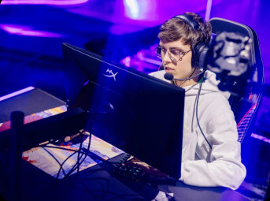
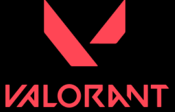

A LOUD é a principal marca de gaming e entretenimento, focada em competição e na comunidade da América Latina.
Loud (estilizado como LOUD) é a maior organização brasileira
de esportes eletrônicos com equipes que competem em Free
Fire, League of Legends e Valorant. Fundada em 2019, a LOUD é a
organização de esportes eletrônicos com maior número de
seguidores nas redes sociais do Brasil e a segunda maior do mundo.
Em 2022, a equipe de Valorant da Loud ganhou o prêmio de Melhor
Equipe de Esportes Eletrônicos no Esports Awards e no The Game
Awards.
A Loud foi criada em 28 de fevereiro de 2019 pelo youtuber Bruno
“PlayHard”Oliveira junto com os empresários Jean Ortega e Mathew
Ho. Desde o início, a Loud se concentrou em criar vídeos
no Youtube e popularizar seus jogadores e influeciadores. Sendo
uma das pioneiras desse modelo no Brasil, a Loud se tornou a
primeira organização brasileira de esportes eletrônicos a atingir 1
bilhão de visualizações.
A Loud começou com uma equipe de Free Fire, chegando a competir
na Liga Brasileira de Free Fire (LBFF). Em 2020, a Riot Games anunciou
a Loud como uma das equipes selecionadas para participar
do Campeonato
Brasileiro de League of Legends (CBLOL) a partir da
temporada 2021.
No ano de 2022, a Loud anunciou uma equipe
de Valorant com um elenco
já montado pelos jogadores Gustavo
"Sacy" Rossi e Matias "Saadhak" Delipetro.
Em 2021, a Loud foi a equipe que mais ganhou seguidores no Twitter e
se
tornou a mais seguida no Instagram. Em agosto de 2022, a
organização se
tornou a quarta mais assistida do mundo na Twitch.
Em outubro de 2022, a Loud contratou Iran Ferreira, mais conhecido
como
Luva de Pedreiro, como embaixador da organização.
No segundo split de 2023, a Loud conquistou o seu tricampeonato
consecutivo
pelo CBLOL, algo inedito no campeonato, ninguem nunca
tinha conseguido fazer
esse marco antes. Com esse título, a
organização se tornou o melhor time de
League of legends da história
do campeonato, ficando igualado com grandes nomes,
como Red Canids
e PaiN gaming, na qual enfrentou as últimas 3 finais. Em questão
de taças, a Loud está atrás da KaBuM! (4 titulos) e INTZ (5 titulos).
No final de 2023, a Loud anuncia a integração do atleta de futebol,
Vinícius Júnior,
como o novo embaixador da organização e
também como parte da diretoria. O anúncio foi
feito através do Twitter
do mesmo, e também pelo Twitter da Loud.
TuyZ ganha competição de embaixinha contra jogadores do MASTERS
Qck passou mal antes de jogo contra EDG no Masters Madrid
+45 milhões de seguidores LOUD
+250 milhões de seguidores Creators
+5 anos de existência